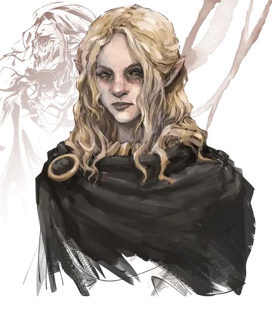

Валиндра Теневая Мантия
Valindra Shadowmantle
Средняя Нежить, нейтрально-злая, именной НИП

Класс Доспеха 17 (природный доспех)
Хиты 135 (18к8 + 54)
Скорость 30 футов
| мод | спас | ||
|---|---|---|---|
| СИЛ | 11 | +0 | +0 |
| ЛОВ | 16 | +3 | +3 |
| ТЕЛ | 16 | +3 | +10 |
| мод | спас | ||
|---|---|---|---|
| ИНТ | 20 | +5 | +12 |
| МДР | 14 | +2 | +9 |
| ХАР | 16 | +3 | +3 |
Навыки Восприятие +9, История +12, Магия +19, Проницательность +9
Сопротивление урону некротическая энергия, холод, электричество
Иммунитет к урону яд; дробящий, колющий, рубящий от немагических атак
Иммунитет к состояниям паралич, очарование, отравление, истощение, испуг
Чувства истинное зрение 120 футов, пассивное Восприятие 19
Языки Общий, Бездны, Дварфийский, Драконий, Инфернальный, Эльфийский
Опасность 21 (33000 опыта)
Бонус мастерства +7
Особенности
Легендарное сопротивление (3/день). Если Валиндра проваливает спасбросок, он может вместо этого сделать спасбросок успешным.
Восстановление. Если у Валиндры есть филактерий, Валиндра через 1к10 дней после уничтожения получает новое тело, восстанавливает все хиты и становится живой. Новое тело появляется в пределах 5 футов от филактерия.
Подготовка. При подготовке своих заклинаний Валиндра может заменить любое заклинание в своём списке подготовленных заклинаний на другое заклинание того же уровня.
Маска. Бонусным действием Валиндра может замаскировать свою сморщенную плоть и стать похожей на живого эльфа. Эта волшебная иллюзия длится до тех пор, пока она не прервёт её в качестве бонусного действия или пока она не использует легендарное действие «Пугающий взгляд». Эффект также заканчивается, если хиты Валиндры снижаются ниже 30, или если на неё наложено заклинание рассеивание магии [dispel magic].
Использование заклинаний. Валиндра является заклинателем 18-го уровня. Её базовой характеристикой является Интеллект (Сл спасброска от заклинания 20, +12 к попаданию атаками заклинаниями). У неё подготовлены следующие заклинания волшебника:
• Заговоры (неограниченно): волшебная рука [mage hand], луч холода [ray of frost], фокусы [prestidigitation];
• 1 уровень (4 ячейки): волна грома [thunderwave], волшебная стрела [magic missile], обнаружение магии [detect magic], щит [shield];
• 2 уровень (3 ячейки): Мельфова кислотная стрела [Melf’s acid arrow], невидимость [invisibility], обнаружение мыслей [detect thoughts], отражения [mirror image];
• 3 уровень (3 ячейки): восставший труп [animate dead], контрзаклинание [counterspell], огненный шар [fireball], рассеивание магии [dispel magic];
• 4 уровень (3 ячейки): переносящая дверь [dimension door], усыхание [blight];
• 5 уровень (3 ячейки): наблюдение [scrying], облако смерти [cloudkill];
• 6 уровень (1 ячейка): распад [disintegrate], сфера неуязвимости [globe of invulnerability];
• 7 уровень (1 ячейка): перст смерти [finger of death], уход в иной мир [plane shift];
• 8 уровень (1 ячейка): подчинение чудовища [dominate monster], слово силы: оглушение [power word stun];
• 9 уровень (1 ячейка): слово силы: смерть [power word kill].
Сопротивление изгнанию. Валиндра совершает с преимуществом спасброски от всех эффектов, изгоняющих нежить.
Действия
Парализующее касание. Рукопашная атака заклинанием: +12 к попаданию, досягаемость 5 футов, одно существо. Попадание: Урон холодом 10 (3к6). Цель должна преуспеть в спасброске Телосложения Сл 18, иначе станут парализованной на 1 минуту. Цель может повторять этот спасбросок в конце каждого своего хода, оканчивая эффект на себе при успехе.
Легендарные действия
Валиндра может совершить 3 легендарных действия, выбирая из представленных ниже вариантов. За один раз можно использовать только одно легендарное действие, и только в конце хода другого существа. Валиндра восстанавливает использованные легендарные действия в начале своего хода.
Заговор. Валиндра накладывает заговор.
Парализующее касание (стоит 2 действия). Валиндра использует Парализующее касание.
Пугающий взгляд (стоит 2 действия). Валиндра фиксирует взгляд на одном существе, видимом в пределах 10 футов. Цель должна преуспеть в спасброске Мудрости Сл 18 от этой магии, иначе станет испуганной на 1 минуту. Испуганная цель может повторять этот спасбросок в конце каждого своего хода, оканчивая эффект на себе при успехе. Если цель успешно совершила спасбросок или действие эффекта закончилось, она получает иммунитет к взгляду Валиндры на следующие 24 часа.
Разрушение жизни (стоит 3 действия). Все существа, не являющиеся нежитью, в пределах 20 футов от Валиндры должны совершить спасбросок Телосложения Сл 18 от этой магии, получая урон некротической энергией 21 (6к6) при провале, или половину этого урона при успехе.
Описание
Коллекционеры магии. Личи ищут и собирают свитки заклинаний и магические предметы. В дополнение к своим магическим способностям лич также может использовать и создавать зелья и свитки, имеет свою личную библиотеку с магическими книгами, и часто у лича есть один или два магических посоха или магические палочки. Если на лича нападут, то он не побоится их использовать.
Натура нежити. Личу не нужен воздух, еда, питье и сон.